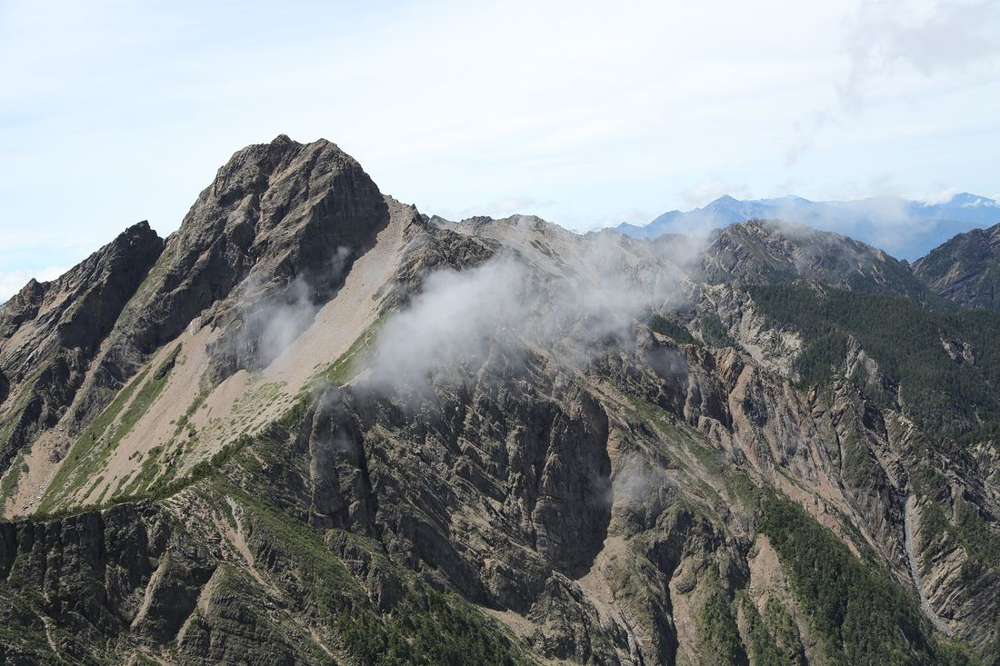
3,952 m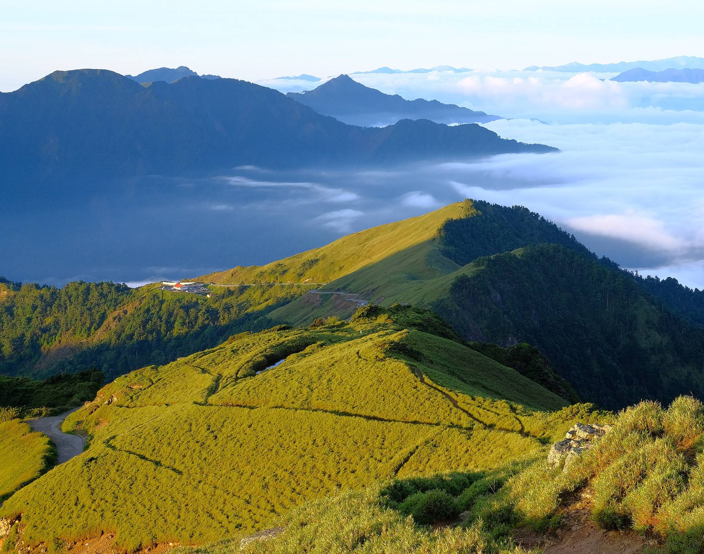
- 單程NT$5,000 起／每車
- 上車地點台北・板橋・台中・到府
- 行程天數當日・兩天・三天都可以
- 車款五人座・九人座・最多 4／8 位乘客
-
01
市區接你
約在台北車站、板橋車站或台中碰面，也可以直接到你家樓下接。幾點出發，你決定。
-
02
直達登山口
專車一路開到登山口，中途不繞路接別人。裝備放後車廂，你可以在車上補眠。
-
03
下山接你回家
約好下山時間，車在登山口等你。上車就能休息，直接送你回市區。
熱門路線
常跑的登山口
以下是最常被預約的路線。沒列到的登山口也能去，告訴我你要爬哪座山就好。
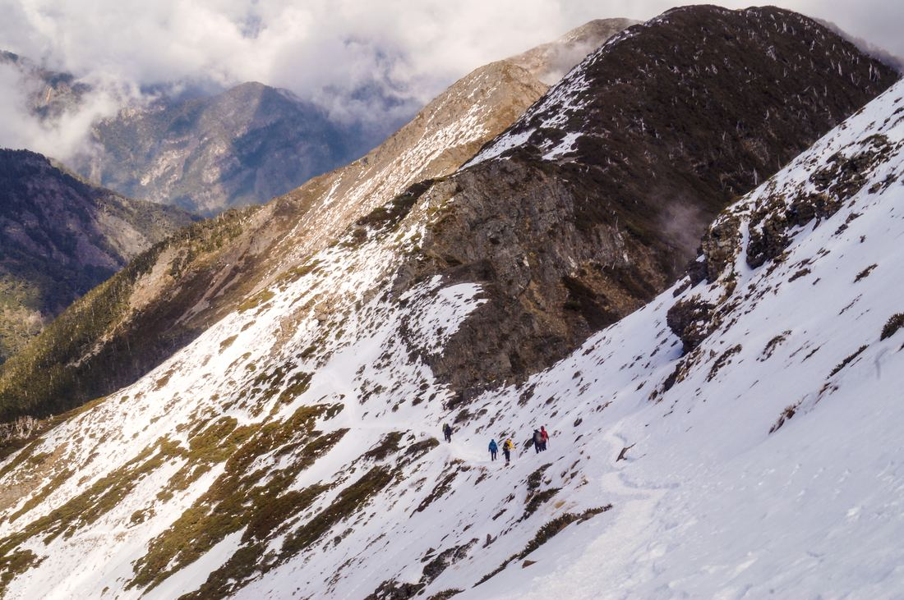
3,886 m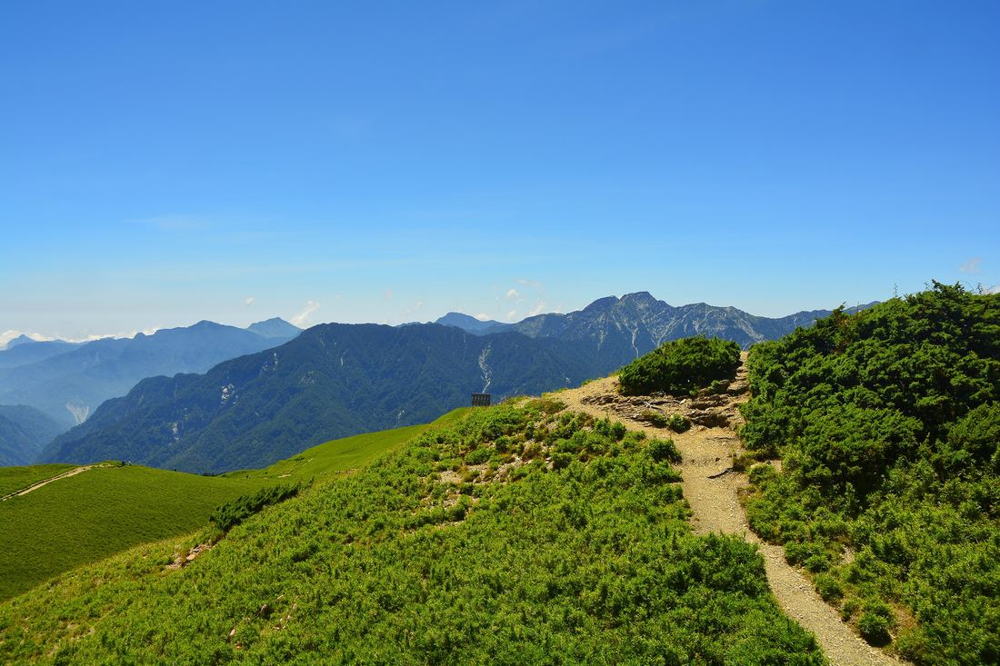
3,417 m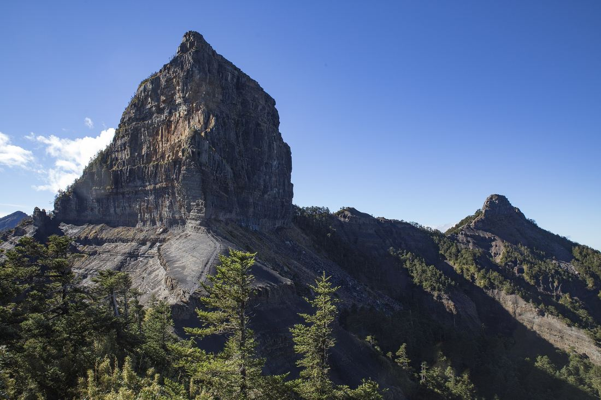
3,492 m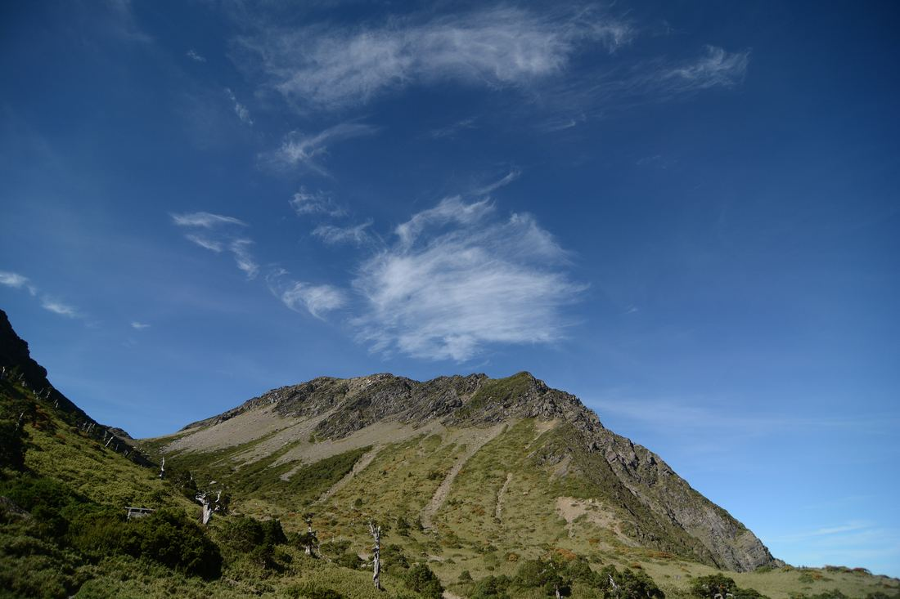
3,742 m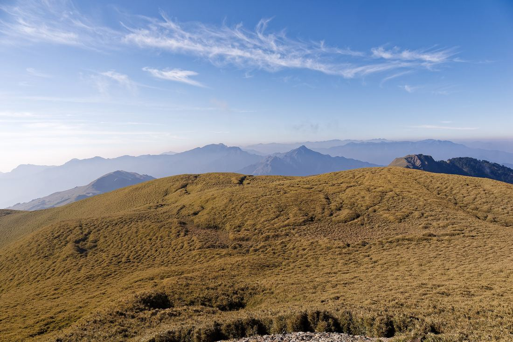
3,358 m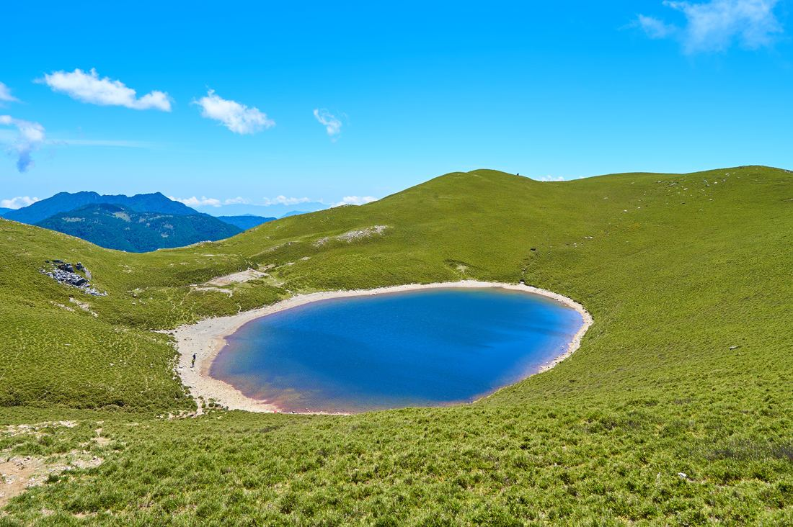
3,310 m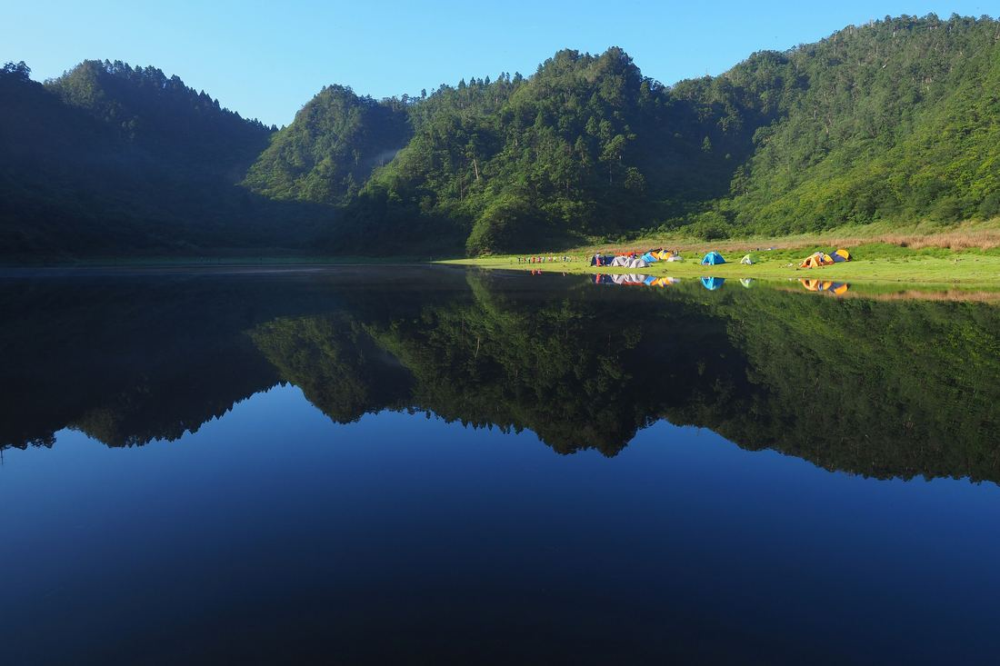
1,300 m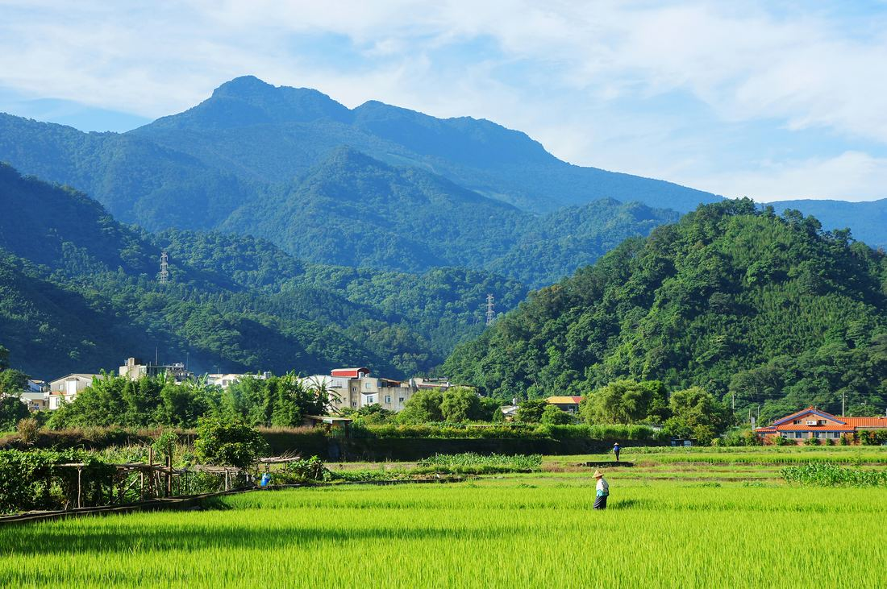
2,220 m車程為一般路況下的概估，實際時間依出發時段與路況而定。
收費方式
價格直接列給你看。
以下是整台車的價格，不是算人頭。五人座最多 4 位乘客，九人座最多 8 位乘客，同行的人越多，每個人分攤越少。
| 路線 | 單程 | 來回 | 一天來回 |
|---|---|---|---|
| 玉山（塔塔加） | $6,500 | $12,000 | — |
| 雪山・武陵四秀 | $5,500 | $11,000 | $9,000 |
| 合歡山群峰 | $6,000 | $12,000 | — |
| 大霸尖山 | $6,000 | $12,000 | — |
| 南湖大山 | $5,500 | $11,000 | — |
| 奇萊南華 | $6,000 | $12,000 | — |
| 嘉明湖 | $8,000 | $16,000 | — |
| 松蘿湖 | $5,000 | $10,000 | — |
| 羅馬縱走 | $5,500 | $11,000 | $9,000 |
| 高島縱走 | — | — | $6,500 |
| 塔曼山 | — | — | $6,500 |
| 北得拉曼 | — | — | $6,500 |
| 郡大山 | — | — | — |
| 霞喀羅古道（A 進 B 出） | — | — | — |
| 霞喀羅古道（養老進出） | — | — | — |
| 加里山 | 詢價 | 詢價 | 詢價 |
| 玉山（塔塔加） | $8,000 | $15,000 | — |
| 雪山・武陵四秀 | $7,000 | $14,000 | $12,000 |
| 合歡山群峰 | $7,000 | $14,000 | — |
| 大霸尖山 | $7,000 | $14,000 | — |
| 南湖大山 | $7,000 | $14,000 | — |
| 奇萊南華 | $7,000 | $14,000 | — |
| 嘉明湖 | $10,000 | $20,000 | — |
| 松蘿湖 | $6,000 | $12,000 | — |
| 羅馬縱走 | $7,000 | $14,000 | $12,000 |
| 高島縱走 | — | — | $8,000 |
| 塔曼山 | — | — | $8,000 |
| 北得拉曼 | — | — | $8,000 |
| 郡大山 | — | $18,000 | $16,000 |
| 霞喀羅古道（A 進 B 出） | — | $14,000 | $10,000 |
| 霞喀羅古道（養老進出） | — | — | $8,000 |
| 加里山 | 詢價 | 詢價 | 詢價 |
| 玉山（塔塔加） | $6,000 | $11,000 | — |
| 雪山・武陵四秀 | $6,500 | $13,000 | $12,000 |
| 合歡山群峰 | $5,000 | $10,000 | — |
| 大霸尖山 | $6,000 | $12,000 | — |
| 南湖大山 | $6,500 | $13,000 | — |
| 奇萊南華 | $5,000 | $10,000 | — |
| 嘉明湖 | $8,000 | $16,000 | — |
| 松蘿湖 | $6,000 | $12,000 | — |
| 羅馬縱走 | $6,000 | $12,000 | $10,000 |
| 高島縱走 | — | — | $6,500 |
| 塔曼山 | — | — | $7,500 |
| 北得拉曼 | — | — | $7,000 |
| 郡大山 | — | — | — |
| 霞喀羅古道（A 進 B 出） | — | — | — |
| 霞喀羅古道（養老進出） | — | — | — |
| 加里山 | 詢價 | 詢價 | 詢價 |
| 玉山（塔塔加） | $7,500 | $14,000 | — |
| 雪山・武陵四秀 | $7,500 | $15,000 | $13,000 |
| 合歡山群峰 | $6,000 | $12,000 | — |
| 大霸尖山 | $7,000 | $14,000 | — |
| 南湖大山 | $7,500 | $15,000 | — |
| 奇萊南華 | $6,000 | $12,000 | — |
| 嘉明湖 | $10,000 | $20,000 | — |
| 松蘿湖 | $7,000 | $14,000 | — |
| 羅馬縱走 | $7,000 | $14,000 | $12,000 |
| 高島縱走 | — | — | $8,000 |
| 塔曼山 | — | — | $8,000 |
| 北得拉曼 | — | — | $9,000 |
| 郡大山 | — | $15,000 | $13,000 |
| 霞喀羅古道（A 進 B 出） | — | $14,000 | $10,000 |
| 霞喀羅古道（養老進出） | — | — | $8,000 |
| 加里山 | 詢價 | 詢價 | 詢價 |
- 單程一趟車：從市區到登山口，或從登山口回市區。
- 來回去程、回程各一趟，適合兩天以上的行程，下山日期和時間事先約好。
- 一天來回當天送你上山，等你下山再載回市區，適合單日行程。
- 其他標示「—」的走法、A 進 B 出的縱走、沒列出的登山口，傳訊息或打電話給我，直接報價。
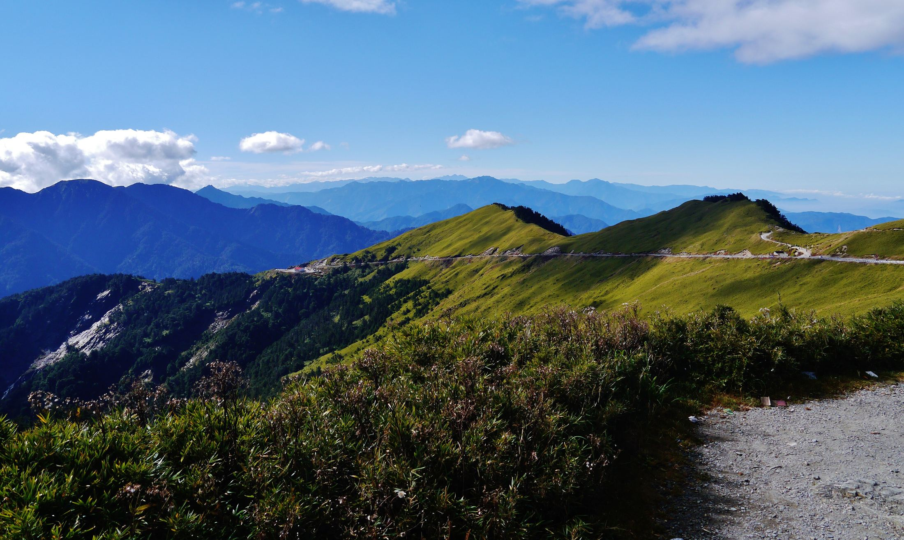
為什麼搭專車
爬山已經夠累了，
交通就交給我。
-
門口到登山口
不用轉車、不用找停車位，很多登山口根本沒有大眾運輸。
-
時間你決定
凌晨兩點出發看日出，或下山後泡個溫泉再走，都可以商量。
-
下山不用自己開
走了一整天，回程在車上睡覺比疲勞駕駛安全得多。
-
揪團分攤更划算
整車計價，三四個朋友一起分，比各自想辦法上山省事。
常見問題
出發前，你可能想知道
費用怎麼算？
以整台車計價，有五人座和九人座兩種車型，台北、台中出發都可以，單程 NT$5,000 起，各路線的價格列在上面的收費表。收費表上沒有價格的走法或沒列出的登山口，把目的地、日期、人數傳給我，我會回覆一個明確的金額。
是什麼車？最多可以坐幾個人？
有兩種車型：五人座最多可載 4 位乘客；九人座是 Volkswagen Caravelle 或同級車款，最多可載 8 位乘客。人數或大背包比較多的時候，請在詢價時先告訴我，我幫你建議車型。
可以到我家接嗎？
可以。一般約在台北車站、板橋車站或台中碰面，也能到府接送，詢價時把地址寫在備註就好。
兩天、三天的行程，下山怎麼接？
出發前先約好下山的日期和大概時間，我會在登山口等你。山上有訊號的地方如果能先傳個訊息告訴我進度，時間會抓得更準。
沒列在網站上的登山口可以去嗎？
可以問。網站上列的是最常跑的路線，其他登山口請在表單選「其他登山口」並在備註寫下地點。
入園、入山證和山屋要自己申請嗎？
要。我負責的是交通接駁，入園入山申請、山屋或營地、登山保險和裝備都請自行準備。
天氣不好要取消怎麼辦？
山上的天氣說變就變，安全第一。遇到颱風、豪雨或封山，請盡早聯絡我，我們直接討論改期。
各路線接駁價格
玉山（塔塔加）登山接駁多少錢？
台北出發：五人座單程 $6,500、來回 $12,000；九人座單程 $8,000、來回 $15,000。台中出發：五人座單程 $6,000、來回 $11,000；九人座單程 $7,500、來回 $14,000。以上為整車價格；來回是去程、回程各一趟，一天來回是當天送上山、等下山再載回。
雪山・武陵四秀登山接駁多少錢？
台北出發：五人座單程 $5,500、來回 $11,000、一天來回 $9,000；九人座單程 $7,000、來回 $14,000、一天來回 $12,000。台中出發：五人座單程 $6,500、來回 $13,000、一天來回 $12,000；九人座單程 $7,500、來回 $15,000、一天來回 $13,000。以上為整車價格；來回是去程、回程各一趟，一天來回是當天送上山、等下山再載回。
合歡山群峰登山接駁多少錢？
台北出發：五人座單程 $6,000、來回 $12,000；九人座單程 $7,000、來回 $14,000。台中出發：五人座單程 $5,000、來回 $10,000；九人座單程 $6,000、來回 $12,000。以上為整車價格；來回是去程、回程各一趟，一天來回是當天送上山、等下山再載回。
大霸尖山登山接駁多少錢？
台北出發：五人座單程 $6,000、來回 $12,000；九人座單程 $7,000、來回 $14,000。台中出發：五人座單程 $6,000、來回 $12,000；九人座單程 $7,000、來回 $14,000。以上為整車價格；來回是去程、回程各一趟，一天來回是當天送上山、等下山再載回。
南湖大山登山接駁多少錢？
台北出發：五人座單程 $5,500、來回 $11,000；九人座單程 $7,000、來回 $14,000。台中出發：五人座單程 $6,500、來回 $13,000；九人座單程 $7,500、來回 $15,000。以上為整車價格；來回是去程、回程各一趟，一天來回是當天送上山、等下山再載回。
奇萊南華登山接駁多少錢？
台北出發：五人座單程 $6,000、來回 $12,000；九人座單程 $7,000、來回 $14,000。台中出發：五人座單程 $5,000、來回 $10,000；九人座單程 $6,000、來回 $12,000。以上為整車價格；來回是去程、回程各一趟，一天來回是當天送上山、等下山再載回。
嘉明湖登山接駁多少錢？
台北出發：五人座單程 $8,000、來回 $16,000；九人座單程 $10,000、來回 $20,000。台中出發：五人座單程 $8,000、來回 $16,000；九人座單程 $10,000、來回 $20,000。以上為整車價格；來回是去程、回程各一趟，一天來回是當天送上山、等下山再載回。
松蘿湖登山接駁多少錢？
台北出發：五人座單程 $5,000、來回 $10,000；九人座單程 $6,000、來回 $12,000。台中出發：五人座單程 $6,000、來回 $12,000；九人座單程 $7,000、來回 $14,000。以上為整車價格；來回是去程、回程各一趟，一天來回是當天送上山、等下山再載回。
羅馬縱走登山接駁多少錢？
台北出發：五人座單程 $5,500、來回 $11,000、一天來回 $9,000；九人座單程 $7,000、來回 $14,000、一天來回 $12,000。台中出發：五人座單程 $6,000、來回 $12,000、一天來回 $10,000；九人座單程 $7,000、來回 $14,000、一天來回 $12,000。以上為整車價格；來回是去程、回程各一趟，一天來回是當天送上山、等下山再載回。
高島縱走登山接駁多少錢？
台北出發：五人座一天來回 $6,500；九人座一天來回 $8,000。台中出發：五人座一天來回 $6,500；九人座一天來回 $8,000。以上為整車價格；來回是去程、回程各一趟，一天來回是當天送上山、等下山再載回。
塔曼山登山接駁多少錢？
台北出發：五人座一天來回 $6,500；九人座一天來回 $8,000。台中出發：五人座一天來回 $7,500；九人座一天來回 $8,000。以上為整車價格；來回是去程、回程各一趟，一天來回是當天送上山、等下山再載回。
北得拉曼登山接駁多少錢？
台北出發：五人座一天來回 $6,500；九人座一天來回 $8,000。台中出發：五人座一天來回 $7,000；九人座一天來回 $9,000。以上為整車價格；來回是去程、回程各一趟，一天來回是當天送上山、等下山再載回。
郡大山登山接駁多少錢？
台北出發：九人座來回 $18,000、一天來回 $16,000。台中出發：九人座來回 $15,000、一天來回 $13,000。以上為整車價格；來回是去程、回程各一趟，一天來回是當天送上山、等下山再載回。
霞喀羅古道（A 進 B 出）登山接駁多少錢？
台北出發：九人座來回 $14,000、一天來回 $10,000。台中出發：九人座來回 $14,000、一天來回 $10,000。以上為整車價格；來回是去程、回程各一趟，一天來回是當天送上山、等下山再載回。
霞喀羅古道（養老進出）登山接駁多少錢？
台北出發：九人座一天來回 $8,000。台中出發：九人座一天來回 $8,000。以上為整車價格；來回是去程、回程各一趟，一天來回是當天送上山、等下山再載回。
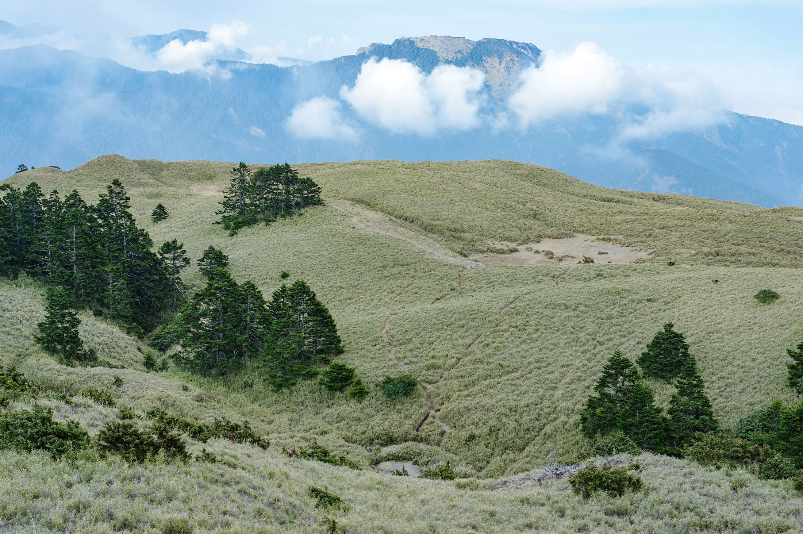